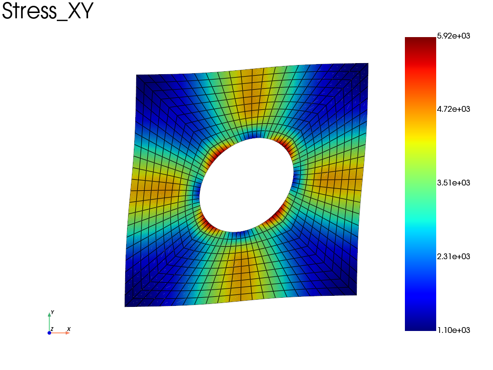

Note
Go to the end to download the full example code.
2D periodic boundary condition
Periodic boundary conditions are enforced with
fedoo.constraint.PeriodicBC on a 2D unit cell with a central hole,
under the plane stress assumption. A mean shear strain
\(\gamma_{xy} = 0.1\) is prescribed on the mean strain degrees of freedom
added by the constraint, and the resulting mean stress is computed by
integrating the stress field over the cell.
import fedoo as fd
Dimension of the problem and geometry
Any mesh with matching nodes on opposite edges can be used, for instance
fd.mesh.rectangle_mesh(nx=51, ny=51) for a homogeneous cell.
fd.ModelingSpace("2Dstress")
mesh = fd.mesh.hole_plate_mesh()
Material, weak form, assembly and linear problem
fd.constitutivelaw.ElasticIsotrop(1e5, 0.3, name="ElasticLaw")
wf = fd.weakform.StressEquilibrium("ElasticLaw")
fd.Assembly.create(wf, mesh, name="Assembly")
pb = fd.problem.Linear("Assembly")
Add periodic constraint
The periodic condition is a set of multipoint constraints linking the nodes of opposite edges. Some global dofs are automatically added to the problem:
E_xx,E_yy,E_xy, the mean strain components (Voigt notation:E_xyis the engineering shear strain \(\gamma_{xy} = 2\varepsilon_{xy}\)),the global vector
MeanStrainthat gathers them.
pb.bc.add(fd.constraint.PeriodicBC(periodicity_type="small_strain"))
2D Periodic Boundary Condition:
name = 'Periodicity'
Add standard boundary conditions
Each mean strain component accepts a Dirichlet condition (strain) or a Neumann condition (associated mean stress times the cell area).
Exx = 0
Eyy = 0
Exy = 0.1 # engineering shear strain gamma_xy
pb.bc.add("Dirichlet", "E_xx", Exx)
pb.bc.add("Dirichlet", "E_xy", Exy)
pb.bc.add("Dirichlet", "E_yy", Eyy)
# Block one node to avoid singularity
center = mesh.nearest_node(mesh.bounding_box.center)
pb.bc.add("Dirichlet", center, "Disp", 0)
List of boundary conditions:
number of bc = 2
0: Dirichlet -> 'DispX' for 1 nodes set to 0
1: Dirichlet -> 'DispY' for 1 nodes set to 0
Solve and plot the stress field
pb.solve()
res = pb.get_results("Assembly", ["Disp", "Stress", "MeanStrain"])
# plot the deformed mesh with the shear stress
res.plot("Stress", "XY", "Node")

Macroscopic strain and stress
Both are printed as Voigt vectors; the strain uses the engineering shear strain \(\gamma_{xy}\).
print(
"Mean strain, Voigt vector ([Exx, Eyy, gamma_xy]): ",
[pb.get_dof_solution(component)[0] for component in ["E_xx", "E_yy", "E_xy"]],
)
# Compute the mean stress tensor
surf = mesh.bounding_box.volume # total surface of the domain = volume in 2d
mean_stress = [1 / surf * mesh.integrate_field(res["Stress"][i]) for i in [0, 1, 3]]
print("Mean stress, Voigt vector ([Sxx, Syy, Sxy]): ", mean_stress)
Mean strain, Voigt vector ([Exx, Eyy, gamma_xy]): [np.float64(0.0), np.float64(0.0), np.float64(0.1)]
Mean stress, Voigt vector ([Sxx, Syy, Sxy]): [np.float64(6.937119678696036e-12), np.float64(-2.9228431230876597e-12), np.float64(2497.6680151186342)]
Total running time of the script: (0 minutes 0.213 seconds)